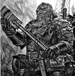
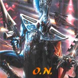

Forums galactiques > Marché galactique : discussions commerciales > Location
Kev Walker09/01 ETU 20:05 | BOnjour à tous, aujourd'hui je lance un nouveau marché, la location de planète. Je souhaiterai louer des planètes dans certains systèmes. Notamment dans des systèmes où habitent certains de mes plus chers amis : Andros (Maedhros ou je ne sais pas quoi), Salyin, Obéron et tous leurs petits camarades qui me déclarent leur amour tous les jours. Cette location sera rémunérée. 5 000 000 de leems les quelques minutes. La discrétion sera assurée, c'est pourquoi je vous demande de m'envoyer vos propositions par MP. Vous serez bien évidemment défendus si jamais on n'a pas apprécié ma petite visite. De l'argent facilement gagné. N'hésitez plus ! |
khornes 09/01 ETU 20:16 | Bien entendu,je pense que si quelqu'un (notement les personnes pré cité par Kev) remarque que vous l'avez aidé Vous risuqez de perdre beaucoup,et ce ne sera pas 5.000.000 leems qui vous sauveront.. Juste pour prévenir.. |
Kev Walker09/01 ETU 20:20 | Ne vous inquiétez pas Khornes, vous n'êtes pas encore dans la liste de mes "amis". Gagner 5 000 000 de leems pour me permettre de visiter mes amis, n'est en rien risqué. Si ce n'est pas vous qui le faîtes, ce sera votre autre voisin. Lequel de vous sera le premier ? Saisissez cette occasion de s'enrichir en ne faisant que trois fois rien. |
| Thâois  10/01 ETU 07:05 | Allez brave gens, je rajoute 1O% sur le prix pour nous permettre de visiter vos planètes |
Maedhros 10/01 ETU 11:06 | C'est bien Kevounet. En effet je m'appelle bien Maedhros. Je signale juste que, comme a précisé Khornes, les "prêteurs" de planètes risque de perdre bien plus que 5 000 000. En effet, les amies de mes ennemies sont mes ennemies. Et en même temps, les ennemies de mes amies. De plus je fais (presque) entièrement confiance à mes voisins. |
Kev Walker10/01 ETU 17:44 | La confiance est faîtes pour mieux être trahit. Tout peut s'acheter, même la loyauté de vos plus fidèles alliés. Je saurai trouver leur prix ! |
Thâois10/01 ETU 20:57 | et moi le financer... |
khornes10/01 ETU 21:58 | Et moi (entre autre) récupérer l'argent par derrière.... |
Thâois11/01 ETU 00:54 | vous êtes si pauvre que ça Khornes ou avez vous des problèmes avec le FISC, voulez vous que je vous fasse un don? Cela m'embeterai fort que demain, il ne vous reste rien... |
| Bul-Kathos  11/01 ETU 14:53 | Je ne pense pas qu'il soit très subtil de jouer avec les puissants, Maedhros : Devant vous : Maedhros (0.65) surtout avec un nombre de points si peu important... C'était juste dit en passant |
Leto Atréides11/01 ETU 15:24 | Tiens, un nouveau marrant moralisateur ! |
Leïa11/01 ETU 15:26 | je ne voit pas de quelle droit tu poste se genre de message bul quelquechose |
Kev Walker11/01 ETU 15:31 | En tout cas je trouve ça plutôt drôle. La compote aurait des petits problèmes pour se développer ? Elle voudrait un peu de leems ? Sinon le combat va être trop facile. |
Leto Atréides11/01 ETU 15:32 | D'accord avec Walker ... |
Maedhros11/01 ETU 17:25 | Alors c'est Kev le grand? Et oui, Le grand kev se cache dans un système fermé avec son bolter. Apres il loue une planète et lance des kamis. Bien sur après il m'est facile de les reprendre. Apres pour Thaois, c'est vrai qu'il est puissant et je ne l'attaquerais pas. Sa ne servirait a rien et je lui causerait des pertes minimes. Vous allez me traitez de lâche mais par rapport a Kev? Et puis, Thois a l'art nain!(Dwarf powaa) Il est presque sympathique de s'engueler avec lui. Alors que Kev ne fait que répéter les mêmes insultes, le mot Bolter et se cache. Je précise encore une fois que celui qui louera une des ces planètes perdra beaucoup de leems. Car même un fédé faible peu envoyer assez de kamis pour causer de nombreux dégâts. Pour finir, non je n'ai pas besoin de leems. |
Kev Walker11/01 ETU 17:31 | Je crois qu'on a vexé la compote. Je note juste que vous avez peur de mon Nain (il me pardonnera cette familiarité) mais pas de moi. C'est une absurdité. Quand je viendrai vous boter (non j'ai pas dit Bolter)les fesses vous direz toujours ça ? Quand je ferai de vous de la compote serez vous aussi insolent ? Mon Dieu cher compote restez au fond du classement et laissez les hommes faire la guerre. Etes vous sur que je ne peux rien faire pour vous aider à devenir un homme plus vite ? Kev Walker, moine renégat. |
Kev Walker13/01 ETU 18:38 | Je souhaiterai louer des planètes dans certains systèmes. Notamment dans des systèmes où habitent certains de mes plus chers amis : Andros (Maedhros ou je ne sais pas quoi), Salyin, Obéron, Uplor, lolita et tous leurs petits camarades qui me déclarent leur amour tous les jours. Cette location sera rémunérée. Prix à débattre. La discrétion sera assurée, c'est pourquoi je vous demande de m'envoyer vos propositions par MP. Vous serez bien évidemment défendus si jamais on n'a pas apprécié ma petite visite. De l'argent facilement gagné. N'hésitez plus ! |
Obéron13/01 ETU 19:34 | et vous les défendrez avec quoi ? Les troupes stationnée dans votre système fermé ? Oulaaaaa ça fait peur dîtes moi ! Allez...cours te cacher dans ton système fermé Ps: et oui on a peur de "ton" nain, car un nain trapu et costaud (lui au moins) est mille fois plus impressionnant qu'un hystérique en robe avec une robe et la moitié du crane remplacé par une plaque de métal vous menaçant d'un jouet pour enfant appelé "Bolter" |
Kev Walker13/01 ETU 19:38 | Voyez les réactions d'un rat acculé contre un mur. Obéron perd ses petites planètes chaque jour. La peur se fait sentir chez cet insecte. Bientôt il ne sera plus qu'un vague souvenir. Obéron, vos heures sont comptés, l'heure de votre rédemption approche ! |
Salyin13/01 ETU 19:42 | Attention Obéron, ou TU VA TE PRENDRE UN COUP DE BOLTER ! de la part de SuperKev le Bolteriseur. Vous avez vu il a un bolter ? Il est bien son Bolter. Moi j'aime bien son bolter, paske son bolter il est minable. Vous l'avez surement croiséé, on entend ses venteries à 2km à la ronde, il est moche, à une plaque de fer collé sur le visage( ce qui arrange un peu les choses) et posséde un Magnifique BOLTER. Zavez deviné ? mais bien sur c'est Kev Walker ! (qui sois dit en passant rime avec Bolter, mais aussi avec menteur, tu meurs, tumeur et t'as peur. |
Forums galactiques > Marché galactique : discussions commerciales > Location